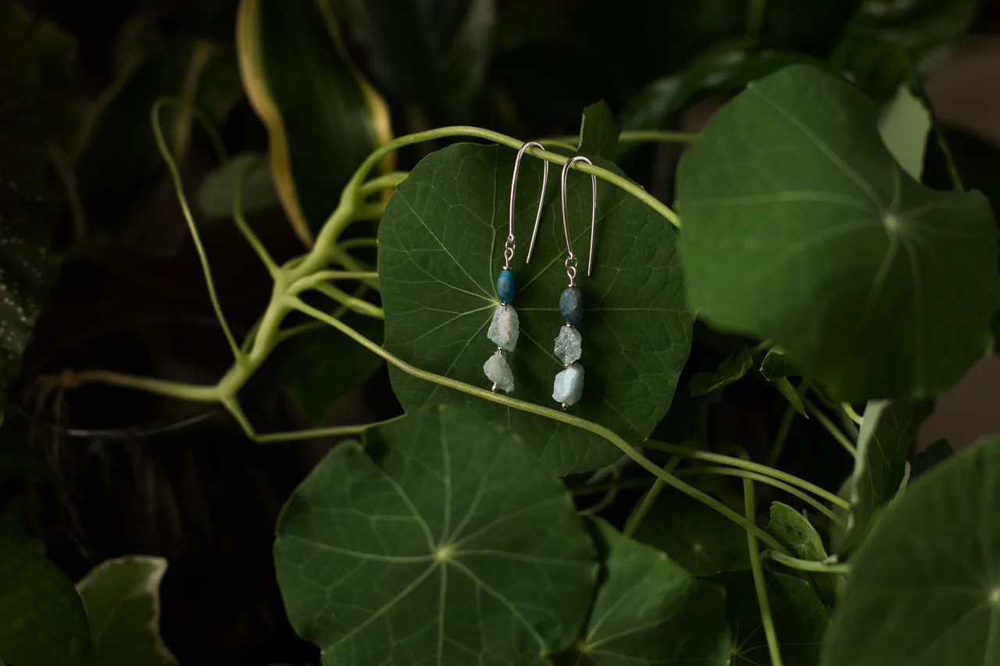
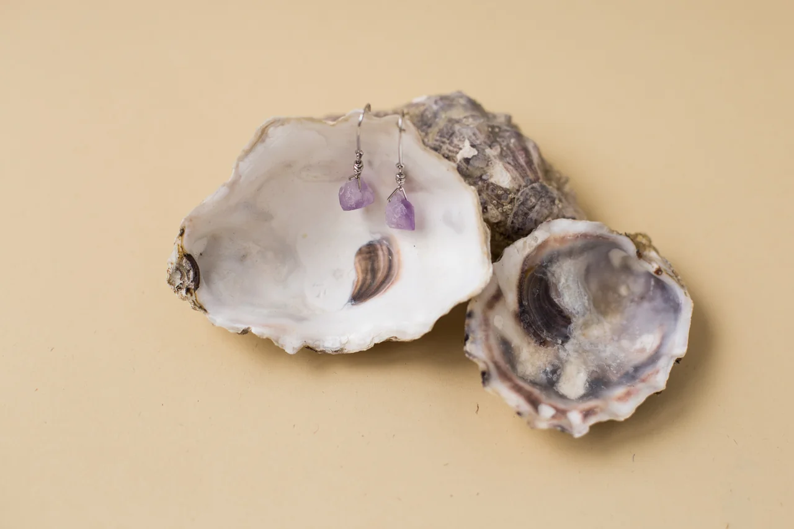
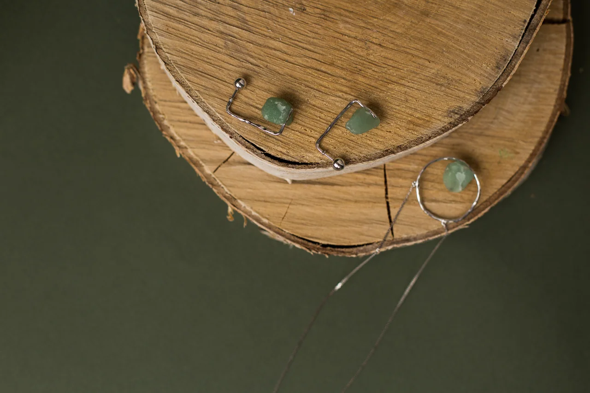

Jewellery
Lumare Dolce
A pair of drop earrings hangs from a stem instead of a display stand. Across the series, leaves, oyster shells and cut wood set off the colours of the stones without competing with the fine chains.





